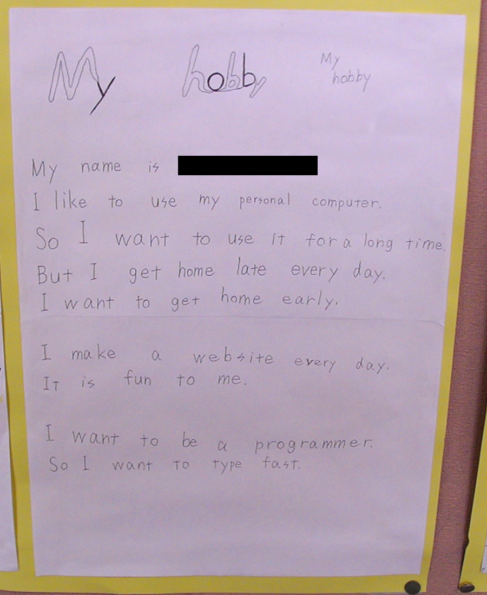

2004年10月02日

My hobby
My name is Neo.
I like to use my personal computer.
So I want to use it for a long time.
But I get home late every day.
I want to get home early.I make a website every day.
It is fun to me.I want to be a programmer.
So I want to type fast.
僕が2004年、中学2年の時に書いた英作文が出てきた。長野に住んでいた頃だ。
「パソコンが好きで、長いこと触っていたいけど、毎日家に帰るのが遅いから早く帰りたい。毎日ウェブサイトを作るのが楽しい。プログラマになりたい。だからタイピング速度を速くしたい」
ってなことを Excite 翻訳以下のレベルで英作している。
1998年頃、父のパソコンを借りて「ポケモンだいすきクラブ」を見たりペイントで絵を描いたりしているうちにパソコンにのめり込み、ホームページビルダーで自分のページを作りだし、Flash5 や FlashMX でアニメーションを作り始めた。2003年頃に映画「Swordfish ソードフィッシュ」を見て、劇中に出てくる Dell のパソコンに憧れて自分のパソコン (Dell Dimension 4500C) を買ってもらい、ウェブサイトをガリガリ作っている頃だった。
当時僕はプログラミングのプの字もやっていなかった。Perl で作られた掲示板 CGI のデザインをカスタマイズしたり、「お気に入りに追加」ボタンを実現する JavaScript の CSS 部分をいじったりはしていたが、処理をいじることはできなかった。それでも、パソコンを使う職業に就きたいとは思っていたようで、「プログラマになりたい」と書いていたようだ。
当時、タイピングは既にそれなりに速かったと思うし、小さい頃からタイピングソフトで遊んでいたからブラインドタッチ (タッチタイピング) もできた。もしかするとこの頃ぐらいにかな打ちからローマ字打ちに切り替えているかもしれない。最初はかな打ちだった。
こんな調子だったガキんちょは、2013年に SE として SIer に入社して、プログラミング言語を初めてまともに覚え始めた。スタートは遅かったものの、フロント周りはこれまでの知識が活きたので、現場配属初週から要件定義に参加してモックアップを作ったりしていた。Java も JavaScript も勢いよく覚え、仕事を通じて Excel VBA、VBScript、Windows コマンド、PowerShell、OracleDB、MySQL なんかの経験を積んでいった。
3年もすると自分の会社の問題が見えてきて、転職を考えるようになった。言語としては Ruby、Perl、Python、シェルスクリプト、ツール類は VirtualBox、Vagrant、Git、Node.js、PostgreSQL なんかを自学し始めて、設計技法やデザインパターン、UI・UX なんかも自然に興味が湧いて色々勉強していた。その勉強メモは Corredor にまとめるようになり、このブログや GitHub のアカウントを武器に転職活動を始めた。
2017年に現在の会社に入り、前職でできなかった、やりたかった仕事が出来ている。職業はと聞かれるといつもどう答えていいのか分からないが、今は「フロントエンドエンジニア」が適当か。上流工程も出来るしやってきたが、上流しかやらない「システムエンジニア」「プロジェクトマネージャ」にはなりたくないと思っている。
自分はこれからも「プログラマ」でいたい。直接の成果物であるソースコードを生み出す立ち位置でいたい。